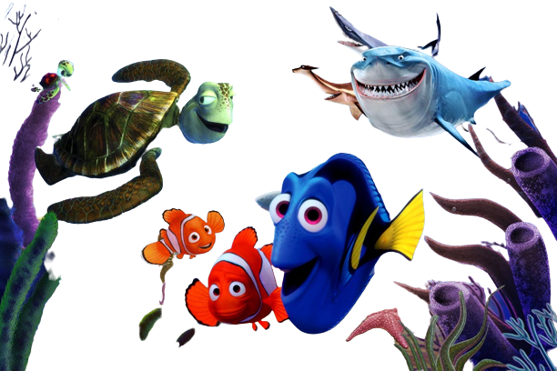

Boa, Crush! Você resolveu se aventurar junto com seus dois amigos, Nemo & Dori.
Eles te convidam para ir mais próximo da superfície. Você fica um pouco receoso e indeciso. Qual foi sua escolha?
Pense muito bem...
(1) Volto para onde eu estava
(2) Mesmo inseguro e com medo, vou com eles!